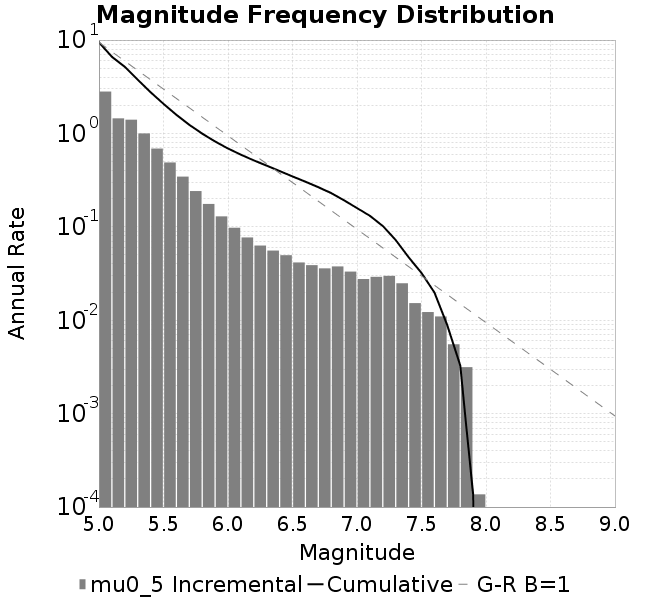
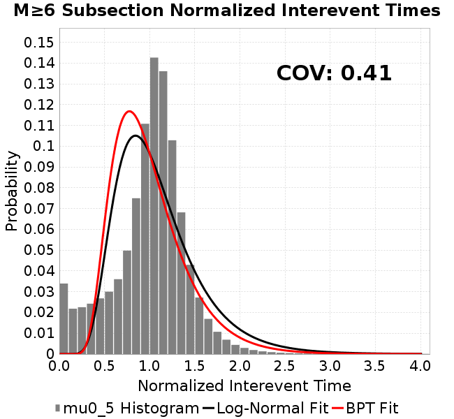
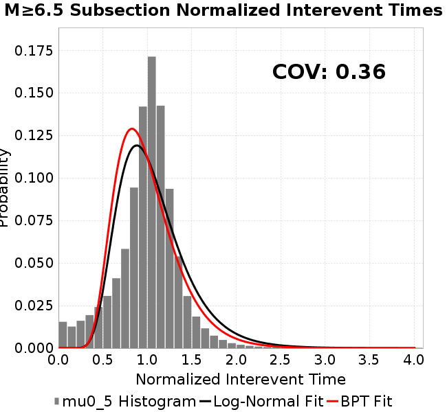
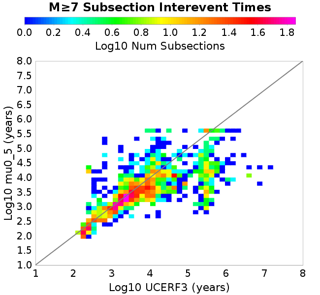

| Catalog | mu0_5 |
|---|---|
| Author | Jaqcui Gilchrist, 2018/09/27 |
| Description | change mu0: mu0=0.5 |
| Fault/Def Model | Fault Model 3.1, Geologic |
| Slip Velocity | 1.0 m/s |
| Average Element Area | 1.35 km^2 |
| Length | 8,721,567 events in 429,329 years |
| Frictional Params | a=0.001, b=0.008, (b-a)=0.007, ddotEQ=1 |

| Scatter | 2-D Hist |
|---|---|
| |
| Scatter | 2-D Hist |
|---|---|
 |  |
| Scatter |  |
|---|---|
| Distance/Velocity |  |
| M≥6 | M≥6.5 | M≥7 | M≥7.5 |
|---|---|---|---|
 |  |  |
| M≥6 | M≥6.5 | M≥7 | M≥7.5 | |
|---|---|---|---|---|
| Elements |  |  | ||
| Subsections |  |  |  | |
| Sections |  |  |
| Min Mag | Scatter | 2-D Hist |
|---|---|---|
| M≥6.0 | ||
| M≥6.5 | ||
| M≥7.0 |  |  |
| M≥7.5 |
Subsections participate in a rupture if at least 20.0 % of its area ruptures
| Min Mag | Scatter | 2-D Hist |
|---|---|---|
| M≥6.0 | ||
| M≥6.5 |  | |
| M≥7.0 |  |  |
| M≥7.5 |
These plots use the 5 paleoseismic sites identified in Biasi & Scharer (2019) on the Hayward, N. SAF, S. SAF, and SJC faults. By default, a rupture is counted at a paleo site if the nearest element (at the surface) slips any amount. We also alternatively apply a probability of detection model. Those results are marked as 'Prob. Filtered'.
Paleoseismic sites table:
| Site Name | Data MRI (yr) | Data Annual Rate | Catalog MRI (yr) | Catalog Annual Rate | Catalog Occurences | Prob Filtered Catalog MRI (yr) | Prob Filtered Catalog Annual Rate | Prob Filtered Catalog Occurences |
|---|---|---|---|---|---|---|---|---|
| HOG | 191.00 | 0.005235602 | 344.55 | 0.002902349 | 1231 | 348.62 | 0.002868418 | 1216.61 |
| FRA | 119.00 | 0.008403362 | 113.88 | 0.008781277 | 3727 | 117.91 | 0.008480706 | 3599.36 |
| COA | 181.00 | 0.005524862 | 172.29 | 0.0058040675 | 2463 | 185.06 | 0.0054036197 | 2292.8 |
| SCZ | 106.00 | 0.009433962 | 109.51 | 0.009131829 | 3875 | 129.13 | 0.0077441707 | 3286.25 |
| TYS | 329.00 | 0.0030395137 | 338.51 | 0.0029541387 | 1254 | 373.62 | 0.00267654 | 1136.02 |
| TOTAL | 31.61 | 0.0316373 | 33.81 | 0.029574942 | 12550 | 36.78 | 0.027189994 | 11537.92 |
Paleoseismic Plots:
 |
|---|
Open interval probabilities table:
| Open Interval (yr) | Catalog Probability | Catalog Poisson Probability | Prob. Filtered Catalog Probability | Prob. Filtered Catalog Poisson Probability | Data Poisson Probability |
|---|---|---|---|---|---|
| 10.00 | 0.9706516 | 0.74397385 | 0.9750448 | 0.76193047 | 0.72878754 |
| 20.00 | 0.89372367 | 0.5534971 | 0.90869486 | 0.5805381 | 0.53113127 |
| 30.00 | 0.78463644 | 0.41178733 | 0.8134104 | 0.44232967 | 0.3870819 |
| 40.00 | 0.66299486 | 0.306359 | 0.70265096 | 0.33702445 | 0.28210047 |
| 50.00 | 0.5353913 | 0.22792307 | 0.5833351 | 0.2567892 | 0.2055913 |
| 60.00 | 0.41173965 | 0.16956879 | 0.46613136 | 0.19565554 | 0.14983238 |
| 70.00 | 0.29385436 | 0.12615475 | 0.3510266 | 0.14907591 | 0.10919597 |
| 80.00 | 0.20116617 | 0.09385583 | 0.25548217 | 0.11358549 | 0.079580665 |
| 90.00 | 0.12355048 | 0.06982628 | 0.17304285 | 0.086544245 | 0.057997398 |
| 100.00 | 0.07116691 | 0.051948924 | 0.11119327 | 0.0659407 | 0.04226778 |
| 110.00 | 0.035665967 | 0.03864864 | 0.06336403 | 0.05024223 | 0.030804234 |
| 120.00 | 0.014585055 | 0.028753577 | 0.029683674 | 0.038281087 | 0.022449743 |
| 130.00 | 0.00555947 | 0.021391908 | 0.012633058 | 0.029167527 | 0.016361093 |
| 140.00 | 0.0011554359 | 0.01591502 | 0.004266761 | 0.022223629 | 0.011923761 |
| 150.00 | 5.729525E-4 | 0.011840358 | 0.0019479977 | 0.01693286 | 0.008689889 |
| 160.00 | 0.0 | 0.008808916 | 9.3024987E-4 | 0.012901663 | 0.0063330824 |
| 170.00 | 0.0 | 0.0065536033 | 5.565132E-4 | 0.00983017 | 0.0046154717 |
| 180.00 | 0.0 | 0.0048757093 | 2.9299574E-4 | 0.0074899066 | 0.0033636983 |
| 190.00 | 0.0 | 0.0036274001 | 1.1173055E-4 | 0.005706788 | 0.0024514215 |
| 200.00 | 0.0 | 0.0026986906 | 5.3434524E-5 | 0.004348176 | 0.0017865654 |
| 210.00 | 0.0 | 0.0020077552 | 2.682679E-5 | 0.0033130078 | 0.0013020267 |
| 220.00 | 0.0 | 0.0014937173 | 1.4191607E-5 | 0.0025242816 | 9.489008E-4 |
| 230.00 | 0.0 | 0.0011112866 | 9.221447E-6 | 0.0019233272 | 6.915471E-4 |
| 240.00 | 0.0 | 8.2676817E-4 | 0.0 | 0.0014654417 | 5.039909E-4 |
These plots use the full set of UCERF3 paleoseismic sites. By default, a rupture is counted at a paleo site if the nearest element (at the surface) slips any amount. We also alternativeslyapply a probability of detection model. Those results are marked as 'Prob. Filtered'.
Paleoseismic sites table:
| Site Name | Data MRI (yr) | Data Annual Rate | Catalog MRI (yr) | Catalog Annual Rate | Catalog Occurences | Prob Filtered Catalog MRI (yr) | Prob Filtered Catalog Annual Rate | Prob Filtered Catalog Occurences |
|---|---|---|---|---|---|---|---|---|
| SSanAndreasBurroFlats | 205.44 | 0.0048677 | 180.32 | 0.005545581 | 2353 | 213.00 | 0.004694828 | 1991.94 |
| SSanAndreasIndio | 277.37 | 0.0036053 | 167.20 | 0.005980877 | 2538 | 178.96 | 0.005587984 | 2371.17 |
| SSAFMCreek1000Palms | 261.33 | 0.0038266 | 1574.33 | 6.3518883E-4 | 270 | 2279.49 | 4.3869414E-4 | 186.02 |
| NSanAndreasFortRoss | 306.28 | 0.003265 | 180.86 | 0.0055292407 | 2346 | 183.84 | 0.0054396098 | 2307.96 |
| NSanAndreasNorthCoast | 263.87 | 0.0037898 | 170.08 | 0.005879533 | 2495 | 174.50 | 0.0057305596 | 2431.68 |
| CalaverasfaultNorth | 618.05 | 0.001618 | 159.14 | 0.006283784 | 2665 | 232.17 | 0.0043071774 | 1826.66 |
| ElsinoreTemecula | 1019.16 | 9.812E-4 | 675.29 | 0.0014808545 | 628 | 700.52 | 0.0014275116 | 605.36 |
| ElsinoreWhittier | 3196.93 | 3.128E-4 | 1346.12 | 7.4287853E-4 | 315 | 1431.87 | 6.983864E-4 | 295.78 |
| SSAFCarrizoBidart | 114.71 | 0.0087179 | 109.36 | 0.009144217 | 3881 | 114.23 | 0.008754128 | 3715.26 |
| SanJacintoHogLake | 311.78 | 0.0032074 | 344.55 | 0.002902349 | 1231 | 348.63 | 0.0028683466 | 1216.59 |
| PuenteHills | 3506.31 | 2.852E-4 | 4760.16 | 2.1007686E-4 | 90 | 5253.92 | 1.9033409E-4 | 81.5 |
| SanGregorioNorth | 1019.06 | 9.813E-4 | 399.73 | 0.0025017196 | 1061 | 414.60 | 0.002411942 | 1022.8 |
| SanJacintoSuperstition | 508.26 | 0.0019675 | 1237.54 | 8.080544E-4 | 343 | 1327.22 | 7.5345265E-4 | 319.79 |
| SSanAndreasWrightwood | 106.04 | 0.0094304 | 143.67 | 0.0069605904 | 2953 | 145.51 | 0.0068723 | 2915.52 |
| SSanAndreasPitmanCanyon | 173.48 | 0.0057643 | 138.41 | 0.007224678 | 3065 | 150.14 | 0.006660232 | 2825.49 |
| SSanAndreasPlungeCreek | 205.36 | 0.0048695 | 339.46 | 0.0029458548 | 1250 | 425.57 | 0.0023498146 | 997.05 |
| FrazierMountianSSAF | 148.57 | 0.0067307 | 113.88 | 0.008781277 | 3727 | 117.92 | 0.008479971 | 3599.01 |
| NSanAndreasSantaCruzSeg | 109.84 | 0.0091041 | 109.51 | 0.009131829 | 3875 | 129.10 | 0.0077459877 | 3287 |
| RodgersCreek | 325.31 | 0.003074 | 169.11 | 0.0059134075 | 2509 | 227.68 | 0.0043922234 | 1863.65 |
| GreenValleyMasonRoad | 293.31 | 0.0034094 | 1617.06 | 6.1840453E-4 | 262 | 2209.51 | 4.525884E-4 | 191.36 |
| HaywardfaultNorth | 318.34 | 0.0031413 | 344.14 | 0.002905774 | 1233 | 356.46 | 0.0028053913 | 1190.39 |
| HaywardfaultSouth | 167.57 | 0.0059677 | 338.51 | 0.0029541387 | 1254 | 373.14 | 0.0026799422 | 1137.52 |
| Compton | 2658.16 | 3.762E-4 | 5746.30 | 1.7402499E-4 | 74 | 6279.20 | 1.5925588E-4 | 67.59 |
| SSanAndreasCoachella | 178.45 | 0.0056037 | 172.29 | 0.0058040675 | 2463 | 184.83 | 0.005410391 | 2295.68 |
| ElsinoreGlenIvy | 179.12 | 0.0055828 | 544.81 | 0.0018355062 | 779 | 582.53 | 0.0017166628 | 728.53 |
| GarlockCentralallevents | 1434.93 | 6.969E-4 | 607.20 | 0.0016469161 | 699 | 620.18 | 0.001612441 | 684.38 |
| NSanAndreasAlderCreek | 869.64 | 0.0011499 | 184.39 | 0.0054233973 | 2301 | 187.24 | 0.0053406083 | 2265.88 |
| SSanAndreasPallettCreek | 149.30 | 0.006698 | 143.08 | 0.0069888853 | 2965 | 144.99 | 0.006897031 | 2926.02 |
| GarlockWesternallevents | 1230.16 | 8.129E-4 | 794.42 | 0.0012587755 | 534 | 819.37 | 0.0012204443 | 517.74 |
| ElsinoreFaultJulian | 3250.98 | 3.076E-4 | 1270.31 | 7.872121E-4 | 334 | 1295.99 | 7.716101E-4 | 327.25 |
| TOTAL | 9.08 | 0.1101451 | 13.29 | 0.07525596 | 31933 | 14.76 | 0.067753874 | 28749.69 |
Paleoseismic Plots:
 |
|---|
Open interval probabilities table:
| Open Interval (yr) | Catalog Probability | Catalog Poisson Probability | Prob. Filtered Catalog Probability | Prob. Filtered Catalog Poisson Probability | Data Poisson Probability |
|---|---|---|---|---|---|
| 10.00 | 0.836968 | 0.471159 | 0.86199844 | 0.5078654 | 0.33238843 |
| 20.00 | 0.55213094 | 0.22199082 | 0.6054808 | 0.2579273 | 0.110482074 |
| 30.00 | 0.31813172 | 0.10459298 | 0.37591538 | 0.13099235 | 0.036722966 |
| 40.00 | 0.15932706 | 0.049279924 | 0.20826982 | 0.06652649 | 0.012206289 |
| 50.00 | 0.07142534 | 0.02321868 | 0.1043822 | 0.033786505 | 0.004057229 |
| 60.00 | 0.030398222 | 0.010939691 | 0.048973568 | 0.017158998 | 0.001348576 |
| 70.00 | 0.012846125 | 0.005154334 | 0.022174804 | 0.008714462 | 4.4825108E-4 |
| 80.00 | 0.0042381394 | 0.002428511 | 0.008607343 | 0.004425774 | 1.4899348E-4 |
| 90.00 | 0.001295788 | 0.0011442149 | 0.0027861558 | 0.0022476974 | 4.952371E-5 |
| 100.00 | 3.525681E-4 | 5.3910713E-4 | 9.1015047E-4 | 0.0011415279 | 1.6461108E-5 |
| 110.00 | 0.0 | 2.540052E-4 | 6.438096E-5 | 5.7974254E-4 | 5.4714824E-6 |
| 120.00 | 0.0 | 1.19676835E-4 | 1.4084081E-5 | 2.944312E-4 | 1.8186574E-6 |
| 130.00 | 0.0 | 5.6386823E-5 | 4.7520107E-6 | 1.4953142E-4 | 6.045007E-7 |
| 140.00 | 0.0 | 2.6567159E-5 | 0.0 | 7.594184E-5 | 2.0092905E-7 |
We first create a tapered moment release time series for the entire catalog. Each event's moment is distributed across a 25 year Hanning (cosine) taper. Here is a plot of a random 2,000 year section of this time series:

We then compute Welch's power spectral density estimate on the entire time series. Results are plotted below, with a Poisson randomization of the catalog also plotted in a gray line, and the 95% confidence bounds from 200 realizations as a light gray shaded area. Significant deviations outside the Poisson confidence intervals indicate synchronous behaviour.

A_1 = 0.001
fA = .1
B_1 = 0.008
muSlipAmp_1 = .0
muSlipInvDist_1 = 1.0
cohesion = 0.0
Dc_1 = 1.0000000000000000818e-05
mu0_1 = 0.5
ddotStar_1 = 9.9999999999999995475e-07
ddotAB_1 = 9.9999999999999995475e-07
alpha_1 = 0.0
theta0_1 = 200000000
tau0_1 = 55.1
sigma0_1 = 100
sigmaFracPin = .5
lowSigmaAction = 1
maxThetaPin = 1.0e13
ddotEQ_1 = 1
ddotEQFname =
stressOvershootFactor = 0.10000000000000000555
lameLambda = 30000
lameMu = 30000
slowSlip_1 = 0
nEq = 100000000000
KZeroFrac = 0
muPin = 1.0
tStart = 0
maxT = 3.16e13
maxWallTime = 169200
maxTrans = 1.0000000000000000159e100
faultFname = UCERF3FM.15km.1km.tri.flt
outFnameInfix = mu0_5
writeTau = 2
writeSigma = 2
writeSlip = 0
writeSlipSpeed = 0
writeState = 0
writeTheta = 2
writePED = 1
writeTransitions = 1
minDtWrite = 0
minDtWriteCoseismic = 0
minDtWriteInterseismic = 0
minMagWrite = 7.7
writeStiffness = 0
stressRateSpecification = 1
dMu3 = 0.01000000000000000
initTauFname =
initSigmaFname =
initThetaFname =
initSlipSpeedFname =
AFname =
BFname =
DcFname =
mu0Fname =
ddotStarFname =
ddotABFname =
alphaFname =
KTauFname = /u/sciteam/gilchris/scratch/stiffness_25a589d/Ktau.25a589d.out
KSigmaFname = /u/sciteam/gilchris/scratch/stiffness_25a589d/Ksigma.25a589d.out
tFailFname =
tauFailFname =
tauDotFname =
sigmaDotFname =
KZeroFname = UCERF3FM.15km.1km.tri.KZero
pinnedFname = UCERF3FM.15km.1km.tri.pin
neighborFname = UCERF3FM.15km.1km.tri.neighbors
stressRateFname =
slowSlipFname =
writePatchFname =
DEBUG = 0
ZBrentUpperBracket = 0
receiverElementAreaFrac = 0.8
receiverElementIntTol = 1.0e-4
receiverElementSubdivisionMax = 4
tgfDist1 = 3
tgfDist1 = 10
lowSigmaAction = 1
highSigmaAction = 0